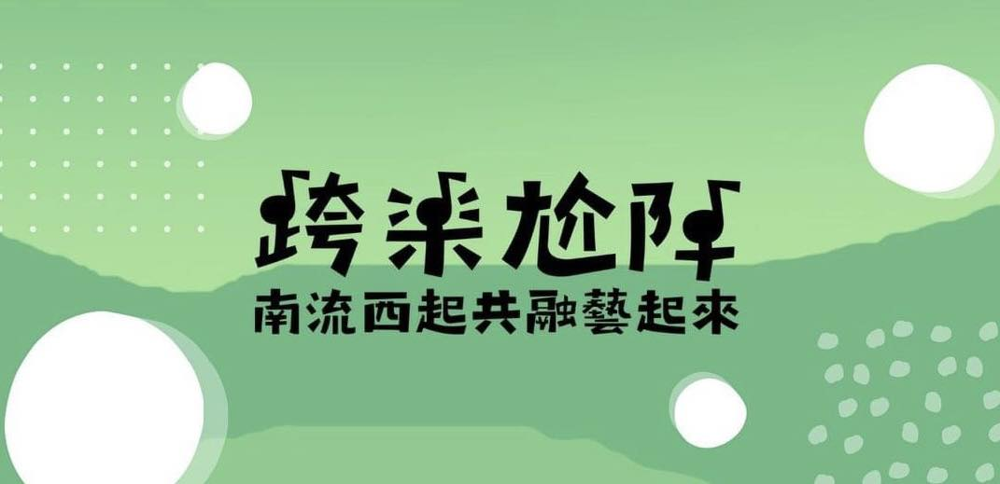

音樂創作計畫
透過 Podcast、月琴、嘻哈與原創歌曲工作坊，讓學生與居民共同創作西港故事，讓音樂成為跨世代對話的方法。

計畫理念
西港擁有胡麻產業、慶安宮香科與豐厚的地方文化，卻也面臨特色意象不足、傳統歌謠傳承斷層、對陣頭文化的偏見與青年參與下降等挑戰。
「跨樂尬陣」以音樂作為共同語言，讓學生與居民不是服務與被服務，而是共同培力、共同創作、共同展演，將地方故事轉化為可被聽見、看見與持續傳承的文化行動。
行動方法
透過 Podcast、月琴、嘻哈與原創歌曲工作坊，讓學生與居民共同創作西港故事，讓音樂成為跨世代對話的方法。
以紀錄片、電子書、繪本與 AR 導覽保存地方知識，讓西港文化能被學童、居民與外部觀眾理解。
結合胡麻節舞台、音樂劇與成果展，讓學生、居民、學童與專業團隊共同站上舞台。
把地方變成教室，培養具有社會意識、創作能力與實務經驗的創展人才。
成果亮點
音樂劇《鯉魚公說我爸跟我很像，我說哪有！》於臺南市美術館演出，演員包含南臺學生、臺南市民、西港居民與在地學童，將地方文化、音樂創作與共融展演結合。
課程累積 10 部西港在地紀錄片、10 本電子書與 3 本電子繪本，讓地方人物、產業與文化記憶能以更容易親近的形式被保存。
透過在地田野、創作工作坊與胡麻節展演，累積 20 首在地歌謠，並讓學生與居民在共同創作中建立新的地方認同。
影片與聲音
影片以 YouTube 嵌入，音樂與 Podcast 則連到公開平台。大型影音不直接放進網站，讓網站保持快速、穩定，也方便後續持續更新。
現場掃描資源入口
這一區可以延伸成展場海報、簡報最後一頁、活動手冊或成果展入口。已確認的公開連結先放上；電子書與音樂劇完整影片待補單一公開網址後，就能換成正式 QR code。
最適合放在海報、簡報與展場立牌。掃描後可進入所有官方平台。
開啟 Linktree追蹤最新活動、演出、成果展與計畫動態。
前往 Facebook首頁主打影片，適合放在活動現場與成果展示入口。
開啟影片音樂劇、紀錄片與計畫影片建議集中整理成播放清單。
前往頻道收錄西港主題歌曲與音樂劇相關作品，適合讓觀眾現場掃描聆聽。
聽音樂把地方故事、居民聲音與學生創作整理成可持續收聽的聲音紀錄。
收聽 Podcast目前資料中有電子書與繪本成果，但尚未確認公開入口網址。
待補公開連結目前先連到官方 YouTube 頻道；若有單支影片或播放清單網址，建議改成專屬 QR。
先看官方頻道比賽與獎項
以在地共融與永續行動成果獲得肯定。
以音樂創作、數位文資保存與西港共融展演呈現大學社會責任成果。
以地方共創、SDG 4 / 10 / 11 與永續支持系統呈現計畫影響力。
原創歌曲、Podcast 與紀錄片作品陸續獲得競賽與入選肯定。
合作網絡
合作洽詢
歡迎與計畫團隊討論工作坊、講座、跨校交流、國際合作、音樂與影像紀錄、地方創生與共融展演等合作方向。